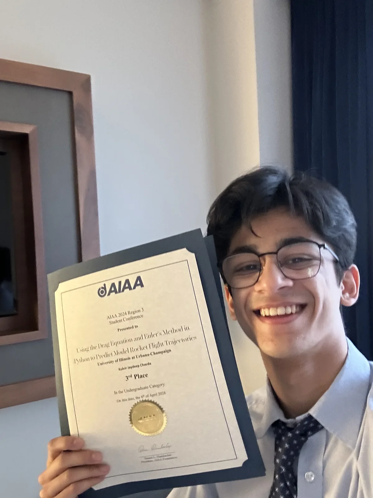

Expected August 2028
Carnegie Mellon University
M.S. in Robotics, Robotics Institute
Exploration and field robotics with Prof. Matt Travers
Pittsburgh, Pennsylvania
I’m an aerospace engineer, a licensed private pilot, and a robotics master’s student at Carnegie Mellon.
I work with Prof. Matt Travers on how robots can explore unfamiliar coastlines. My current project is NOMORA.
Before Pittsburgh, I studied aerospace engineering at Illinois. I worked on aircraft systems at Stratos and in R&D at Adani, led student teams at MAero, taught rocketry, and learned to fly planes.
Eventually, I’d like to build something of my own.
My CV, August 2026
Expected August 2028
M.S. in Robotics, Robotics Institute
Exploration and field robotics with Prof. Matt Travers
May 2026
B.S. in Aerospace Engineering, minor in Computer Science
Highest Honors · James Scholar Honors · GPA 3.83 / 4.00
May 2026
Licensed Private Pilot · FAA Part 141 program
ROS 2, SLAM, state estimation, multi-robot coordination, LQR/PID/robust control, Webots, Qualisys motion capture.
Python, C/C++, MATLAB, Simulink, Java, Linux/Unix, numerical methods, applied machine learning, data visualization.
SolidWorks, Siemens NX, Fusion 360, CATIA, 3D printing, prototyping, avionics integration, wiring, Eagle EDA, Proteus.
FreeFlyer, OpenRocket, BurnSim, flight dynamics, and foundations in computational fluid dynamics and finite element analysis.
Technical project leadership, systems requirements, experiment planning, scientific writing, teaching, and mentorship.
Native Gujarati and Hindi. Proficient English.
Highest Undergraduate Honors · UIUC
2026Stu Moment Aviation Citizenship Scholarship · UIUC
2025-263rd place, undergraduate category · AIAA Region III Student Conference
2024Dean’s List · Grainger College of Engineering
Fall 2024James Scholar Honors · UIUC
2024